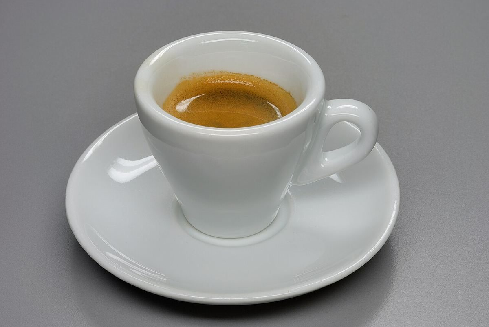
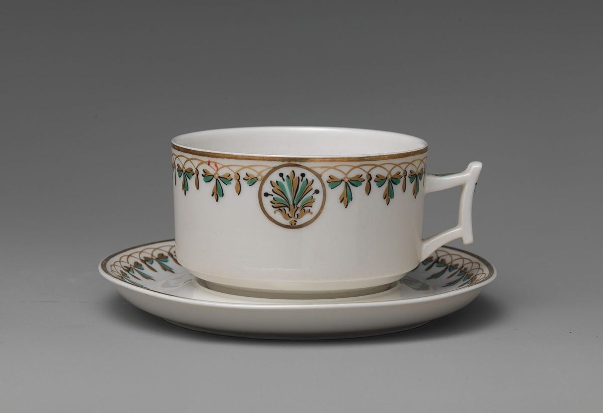
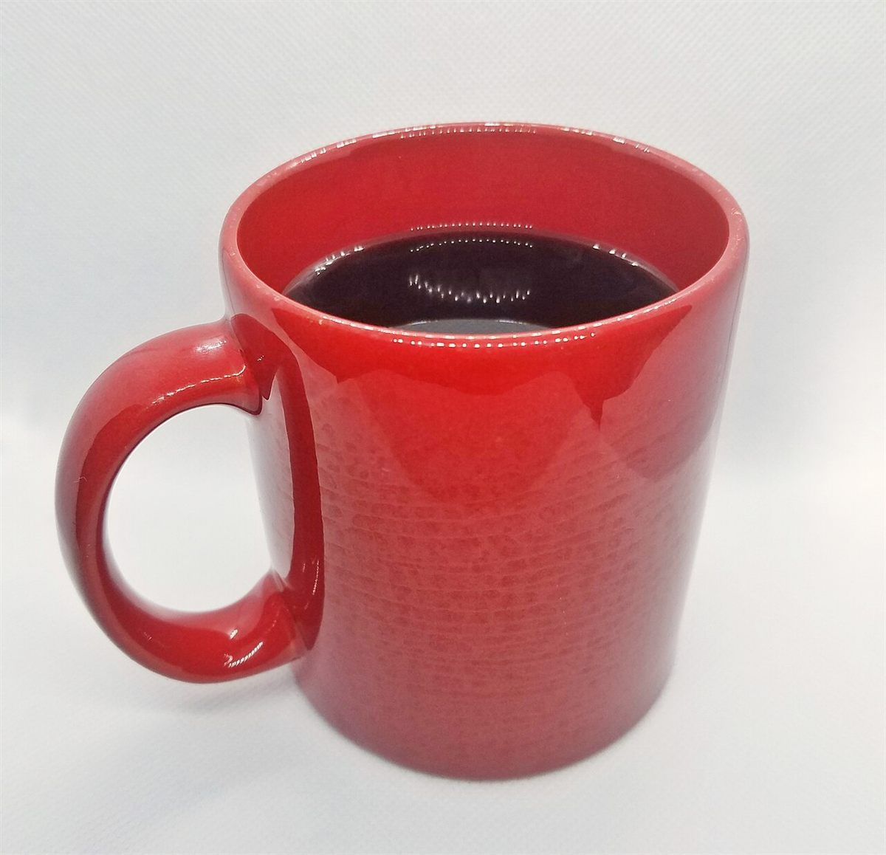

メニュー
メニューは準備中です
提供内容や価格は確認でき次第、ここに載せます。下の写真はイメージです。

項目(準備中)
ドリンク・フード
上記は項目の枠だけで、提供の有無を示すものではありません。
ギャラリー(イメージ)
カップと器の写真




写真はイメージです。お店のものではなく、提供している商品を示すものでもありません。
メニュー
提供内容や価格は確認でき次第、ここに載せます。下の写真はイメージです。

項目(準備中)
上記は項目の枠だけで、提供の有無を示すものではありません。
ギャラリー(イメージ)


写真はイメージです。お店のものではなく、提供している商品を示すものでもありません。